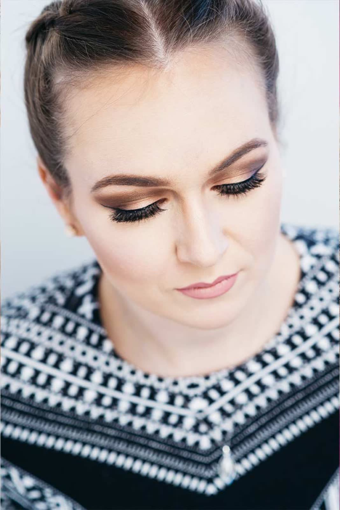

Essensity
Bojenje kose bez amonijaka, prikladno i za trudnice.
Usluge i proizvodi
Radimo isključivo s proizvodima Schwarzkopf Professional, a šminkamo dekorativnom kozmetikom M.A.C. Cijene i termine dogovorite telefonom.
01 · Frizerske usluge
Klasične i ekskluzivne frizerske usluge u opuštajućoj atmosferi. Izdvajamo bojenje kose prirodnim bojama bez amonijaka, tretmane za obnovu strukture kose te tretmane obogaćene uljem argana, marule, indijske smokve ili ružinim uljem, koji su odlična baza za masažu vlasišta.

Bojenje kose bez amonijaka, prikladno i za trudnice.
Njega obojene kose i kose s pramenovima.
Za pretjerano tretiranu, ekstremno oštećenu kosu.
Tretman koji štiti kosu od pucanja prilikom izbjeljivanja.
Besprijekorna njega i blaga mekoća bez otežavanja kose.
Frizure za sve prilike i bojenje kose novim tehnikama.
Terapije za njegu kose s opuštajućom masažom.
Profesionalni proizvodi za njegu kose dostupni isključivo u salonima.

02 · Bojenje kose
Koristimo profesionalne trajne boje za dugotrajan učinak i potpuno pokrivanje sijede kose, sa širokom paletom nijansi i jarkim modnim bojama dugotrajnog sjaja.
03 · Profesionalno šminkanje
Bez obzira na to radi li se o svečanoj prilici ili jednostavnijoj dnevnoj prigodi, koristimo sve tajne profesionalnog make-upa naučene na edukaciji Marije Butković kako biste zablistali.

04 · Proizvodi
Brend Schwarzkopf Professional postoji više od 100 godina. Nastao je u maloj berlinskoj drogeriji kemičara Hansa Schwarzkopfa, a danas se njegova kozmetika za kosu nalazi u salonima na svim kontinentima.
U Studiju M proizvode možete kupiti i za kućnu upotrebu.

Linija za očuvanje intenziteta boje do idućeg posjeta salonu. Zatvara površinu kose i „zaleđuje” pigmente, a ima i UV filtere jer sunce brže izbljeđuje umjetne pigmente nego prirodne. Lagana je i ne opterećuje kosu; šampon nježno čisti i ne isušuje.
Za suhu i oštećenu kosu: hrani i transformira kosu izloženu stresu te je čini glatkom i mekanom, bez masnog osjećaja i otežavanja. Formula koristi botanička ulja.
Linija njege i stajlinga bez umjetnih mirisa, silikona, parafina, mineralnih ulja, parabena, PEG derivata i umjetnih boja. Repair linija koristi goji bobice i proteine soje, Moisture maslinovo ulje i pantenol, a proizvodi za volumen brusnicu i ekstrakt ružmarina. Stajling: Fixing sprej, Texturing Mud, Volumizing krema i Natura Sine serum.
Terapija za kemijski tretiranu ili oštećenu kosu, s tehnologijom Biometic Repair. Kolekcija: šampon, creme šampon, regenerator, sprej regenerator, maska, sealed ends, intense leave-in maska i smooth express.
Bonding režim njege razvijen za blond kosu. Stvara nove veze u strukturi kose, obavija je zaštitnim slojem i pomaže joj vratiti elastičnost bez dodatnog oslabljivanja posvijetljene kose.
Pon i sri 13–20 · uto i čet 8–15 · pet 11–20 · sub 8–13 · Optujska 25, Varaždin